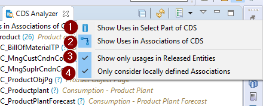
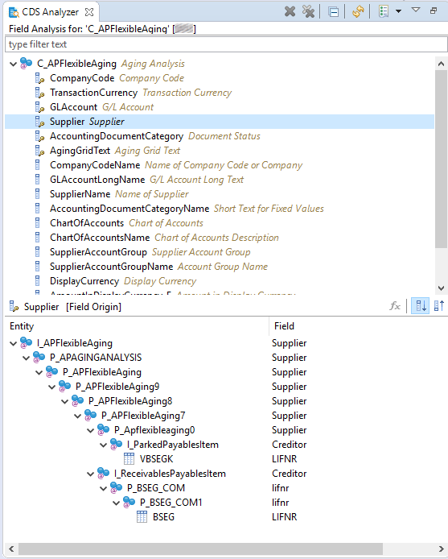

To analyze a CDS view (or Database Table/View) perform one of the following actions:
via the context menu of a CDS or Database Table editor
via the context menu of a selected CDS View or Database Table/View in the Project
Explorer
via the context menu of a selected CDS View or Database Table/View in the Search View (if
ABAP Object Search + was used)
Top-Down Analysis
Figure 1: Example of Top-Down Analysis
The Top-Down Analysis allows you to navigate the whole Dependency tree of CDS View down to
the base tables. Expansion of a CDS View node in the tree will result in the loading of that CDS
Views used entities
Where-Used Analysis
Figure 2: Example of Where-Used Analysis
The Where-Used Analysis provides a way to display all usages of a CDS View (or Database
Table/View) in either the SELECT Part or as Associations in other CDS Views.
There are several options which you can use to control the analysis

Figure 3: Options in Where-Used Analysis
This setting controls whether Uses in SELECT-Parts of a CDS View will be shown
This setting controls whether Uses as Associations of a CDS View will be shown
If this setting is checked only usages in CDS Views which have an API state of type Released
will be shown
This feature is only available starting from NW 7.50
This setting is only relevant if the setting Show Uses in Associations of CDS is
active. If checked, the usage is only valid if the association to the triggering CDS View is
defined locally (i.e. not propagated)
This feature is only available starting from NW 7.52
Used Entities Analysis
Figure 4: Example of Used Entities Analysis
The Used Entities Analysis is an aggregated view on top of the Data provided by the Dependency
Analyzer of ADT. It quickly shows you all entities used in a given CDS View, their occurrences,
used entities, joins and unions.
Field Analysis
The Field Analysis provides an Analysis for a Field of a CDS View (or Database Table/View).
You can either display the field origin for a given field or show where a field is used
Note: The Where-Used mode only shows the usage in fields. If a field is only used
inside a Join Condition or in the Where-Clause the CDS view will
not be listed as a usage

Figure 5: Example of Field Analysis (Top-Down)Figure 6: Example of Field Analysis (Where-Used)